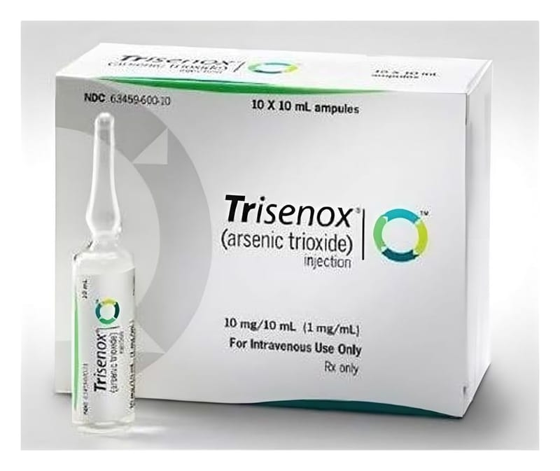

Trisenox 1 mg/1 ml IV İnfüzyon İçin Konsantre Çözelti İçeren Ampul, 10 Adet

Ne için kullanılır
KT · Bölüm 1TRISENOX, infüzyon için konsantre çözelti içeren ampuldür. Hastanede hazırlanıp sulandırılan ve damar içerisine infüzyon şeklinde verilen TRISENOX; konsantre, steril, berrak, renksiz, sıvı çözelti olarak cam ampuller içerisinde sunulur. Her bir karton kutu, 10 adet tek kullanımlık cam ampul içerir. Her bir ampul; 10 mL olup, 10 mg arsenik trioksit içerir.
TRISENOX, yetişkin hastalarda; diğer tedavilere cevap vermeyen veya nüks gelişen ve yeni tanı almış düşük-orta risk akut promiyelositik lösemi(APL) adı verilen kanser çeşidinin tedavisinde all- trans retinoik asit ile kombine ya da monoterapi olarak kullanılır. APL, anormal beyaz kan hücreleri ve anormal kanama ile morarmanın görüldüğü bir hastalık olup, miyeloid löseminin (kan hücrelerinin kanseri) özel bir türüdür.
TRISENOX, yetişkin hastalarda, Pro-Miyelositik Lösemi/Retinoik-Asit-Reseptör-alfa (PML/RAR-alfa) geni varlığı ve/veya t(15; 17) (15 ve 17. kromozomlar arasında translokasyon denen bir anormallik) varlığı ile karakterize Akut Promyelositik Lösemide, remisyon indüksiyonu (iyileşme halinin sağlanması için yapılan tedavi) ve konsolidasyon (pekiştirme tedavisi) için endikedir.
Sayfa 2